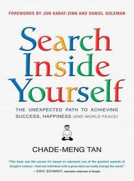

I would share some of my thougts after reading the first chapter of Search Inside Yourself by Chen-Meng Tan. In a nutshell to be rooted in the present is what is essential to develop emotional intelligence (EI). The author refers to his own personal experience to show how EI could be benefitial to everyone. To convince the cross legged highly judgemental reader, like myself the author provides a lot of scientific evdidence for example the London cabbie study and MRI based neuroplasticiy to show EI is trainable. The first chapter is very introductory and explains the benefits of EI. Particularly how the top competencies can be achieved by being strong in EI. Towards the end of the chapter the author suggests a two minutes mindfullness exercise.
To be honest since I do practice meditation and pranayama the two minute mindfulness is not something new for experienctially. However, I had to say this helped me calm down quickly. Must be useful whenever you feel stressed just take a two minute mindfulness break. Will practice.